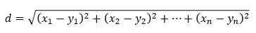

Algoritma KNN (k-nearest neighbor)adalah sebuah metode untuk melakukan klasifikasi terhadap objek berdasarkan data pembelajaran yang jaraknya paling dekat dengan objek tersebut. KNN adalah algoritma supervised learning yang maksudnya algoritma ini menggunakan data yang telah ada dan outputnya telah diketahui. KNN banyak dipergunakan pada aplikasi data mining, pattern recognition, image processing, dll. Tujuan dari algoritma k-NN adalah mengklasifikasikan objek baru berdasarkan atribut dan training data.

Jarak Euclidean adalah formula untuk mencari jarak antara 2 titik dalam ruang dua dimensi. Teknik pencarian tetangga terdekat yang umum dilakukan dengan menggunakan formula jarak Euclidean.